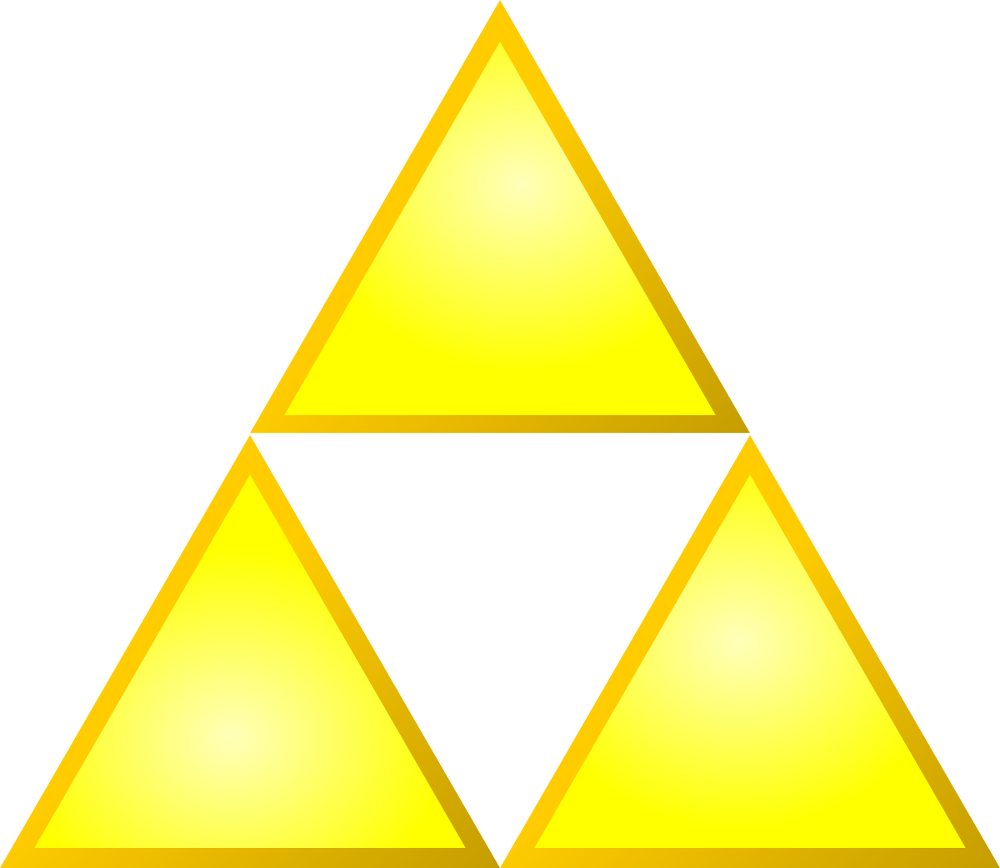

Super Mario

Super Mario is Nintendos most known video game franchise featuring Mario as mascot of the
company. Mario
is an italian plumber
who lives in a world called the Mushroom Kingdom. Most of the games belong to the genre of Jump
and Runs
which means
you have to run through levels full of obstacles and enemies. The first game where he can be
seen was
the 1981 released
Donkey Kong where he was called Jump Man. It was an arcade game where Mario had to rescue the
princess
Pauline from an
gorilla called Donkey Kong. Mario's iconic look came from the Technical limitations which made
it hard
to animate his running.
After the game's success, Jump Man was reidd to Mario and gave the franchise's first game “Super
Mario
Bros” its id.
The levels had a completely different design and the main antagonist was changed to Bowser who
is a
giant turtle.
After some more 2D games the series made the step to 3D with Super Mario 64 in 1996. Because the
games
were so successful Nintendo
started to release a lot of Spin offs like Mario Kart and Mario Party.
The Legend of Zelda

The Legend of Zelda which is just called Zelda most of the Time is also a very big game
franchise from
Nintendo.
Since 1986 a total of 19 main story games were release to the public. Just like the Super Mario
series
it was invented by the
Nintendo employee Shigeru Myamoto. The setting is a fictional middle-aged world called Hyrule
where you
play the Hero called Link.
His mission is to rescue the Princess Zelda who has been kidnapped by the main antagonist Ganon.
They
are also fighting over
the Triforce a legendary Artefact which has unlimited power. You play on an overworld which is
freely
explorable and full
of different characters, villages and dungeons. The currency in this world are rubies and you
can buy
different items like
healing and weapons with it. Its one of the games that has been on almost every Nintendo
console. In
1986 the first game
was released on the NES and because of the technical limitation the game didn't tell what to do
most of
the time which made
it very hard. The most successful game of the series is also the newest called Breath of the
Wild. As
the id suggests
this game put a lot of focus on exploring the huge open world (means you can go where you want)
which is
one of the biggest,
in all the existing open world games. The game is also very long and features tons of side
quests. The
games evolved a lot
over the time from 1986 to now. Most of the modern games are in 3D and let you turn the camera
freely
while the old ones were
played from a top-down view in 2D.

Pokémon
Pokémon is the worlds highest grossing media franchise earning a total of four billion per year.
The
games are Published
by Nintendo and are produced by Gamefreak. The Main series Games release on all of Nintendo's
Handheld
Consoles and some
spin off release on the home consoles. The Games are about going on an adventure in a region
full of
creatures called
Pokémon. You can catch/collect them and fight other people with it. The games have a number of
different
objectives like
catching every Pokémon or becoming the strongest trainer in the region. The series was invented
by
Satoshi Tajiri and he
was inspired by his own childhood where he liked to collect different bugs and draw them. But
other than
the games there is
a lot of other stuff like merchandise, films, the anime and the mobile games which earn a big
part of
the money. In 2016 a
mobile game called Pokémon Go was released which became a huge success. The majority of the
profit is
made through merch
followed by the games.
Kirby
Kirby is another one of Nintendo's Jump and Run series. The Protagonist is Kirby who is a round
pink
creature. His ability is
to suck up enemies and copy their abilities which makes the games different from the Super Mario
games.
It was invented by
Masahiro Sakurai who is also responsible for the Super Smash Bros series. It is published by
Nintendo
and produced by HAL
Laboratory. The first game was released in 1992 and was called Kirby's Dream Land. The objective
is to
retrieve the sparkling
stars which were stolen by the antagonist king Dedede. Back then Kirby hadn't got his iconic
pink colour
and was still white.
Just like Pokémon it also got an anime. After the success of the Jump and Run Games the series
was
extended to feature a lot
of other genres.
Animal Crossing
Unlike all the previous games Animal Crossing doesn't really have a story. It's a relatively
laid back
game where you travel to
a town/island full of animals which take over the roles of villagers. The main quest is to earn
money
build new shops, get
new Villagers to move in and overall just live a peaceful life. After every day the town changes
a bit
like villager moving
out or new shops being built. Apart from all of that there are also a lot of fish and bugs which
you can
catch. You can then
either donate them to the museum or sell them to earn money. The games are very popular even
among
people who usually don't play
many video games especially in Japan. The first came was released in 2001 on the Nintendo 64 in
Japan
only. The European release
was 3 years later on the Gamecube because they had to adjust all the holidays which you could
celebrate
in game to the western
world.
Super Smash Bros
Smash Bros is a fighting game which unlike all the other games doesn't have its own characters.
Instead,
it acts as a game where
Nintendo most know characters can fight each other. However, as the franchise grew bigger a lot
of
character from other studios
started to appear in smash. A few examples are Sonic from Sonic the Hedgehog, Sans from
Undertale or
Steve from Minecraft. As of
17.11.2020 there are 81 characters in the newest game called Super Smash Bros Ultimate with 6
characters
which are still to be announced.
Just like Kirby it was also developed by Masahiro Sakurai which means that when a new game is
announced,
Kirby is usually the first
character to be seen. The games started in 1999 on the Nintendo 64. Back then there were only 12
playable characters. The games have
a very active E-Sports community because of the very competitive gameplay. But this scene was
struck by
a huge scandal which involved
many of the competitive players. A lot of them had very strange relationships with younger
people.

Splatoon
Splatoon is one of Nintendo's the newest game series and it belongs to the genre of third-person
shooter
which is very uncommon for Nintendo.
It has very unique gameplay because unlike most shooters you don't use regular guns. Instead
paint guns
are being used. The goal is to
paint more of the map in your own colour that the enemy team. You are able to hide inside your
own paint
and restore your ammo that way.
Enemy paint damages you. Yet there have been two Splatoon games. The first game was released in
2015 on
the Wii U. Even though the
games were very good and popular and a lot of people played them, because they were online games
they
suffered from Nintendo poor online
service which turned many players down over time. But the games still have a very active
community and a
lot of people play them.
Pikmin
Pikmin is a real time strategy game. You are an astronaut who travels to a foreign planet in
order to
save his civilization. You soon
find little creatures called Pikmin who help you on your journey. There are a total of 7
different kinds
of them which all have unique abilities.
You only have a limited amount of time every in game day to progress within the story. By night
every
Pikmin which isn't near the base or you will
be eaten by the enemy creatures. You can get more Pikmin by delivering plant or defeated enemies
to your
base. It is important to keep them
alive because they get stronger over time. Since 2001 3 Pikmin games have been developed. They
were also
produced by Shigeru Myamoto ,
creator of Mario and Zelda. Even though the games don't attract large amount of people they have
a very
dedicated community who buy every game.